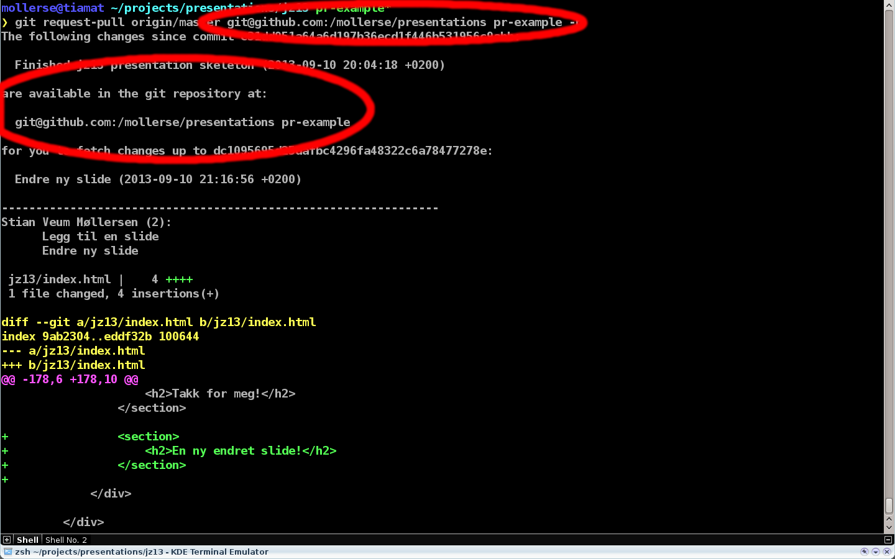
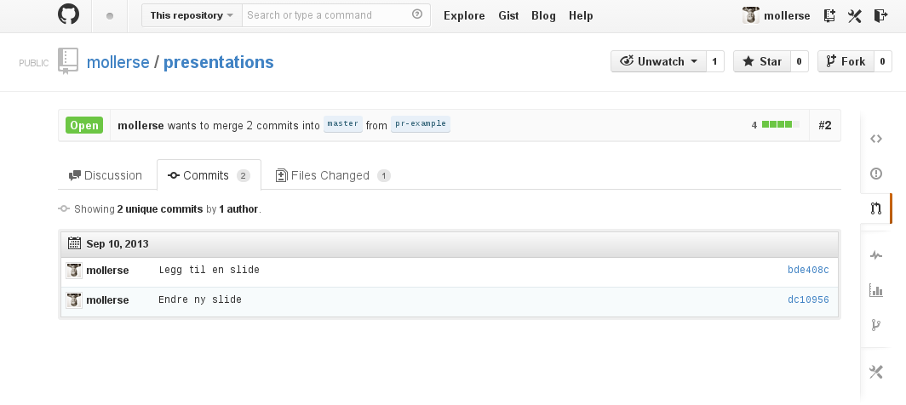
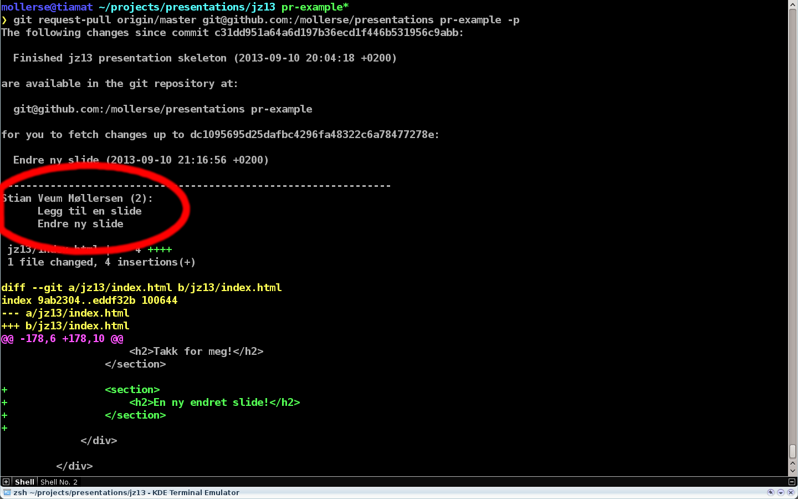
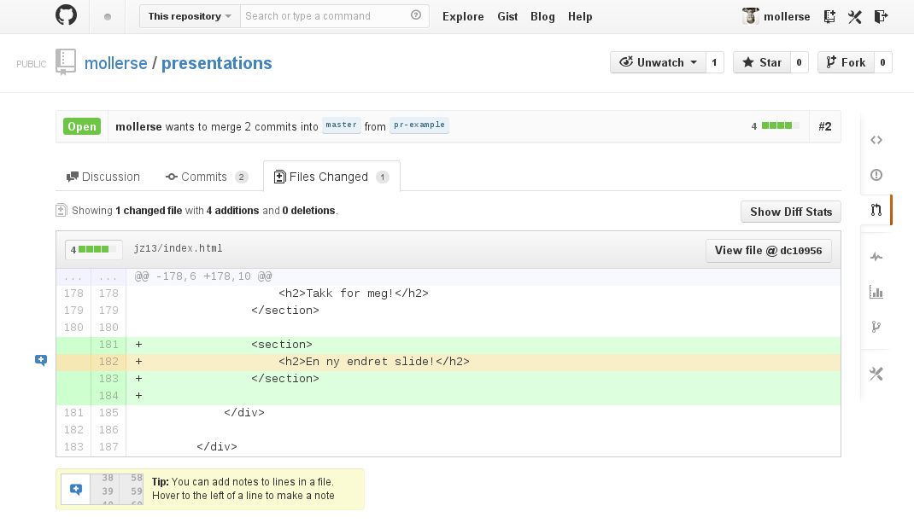
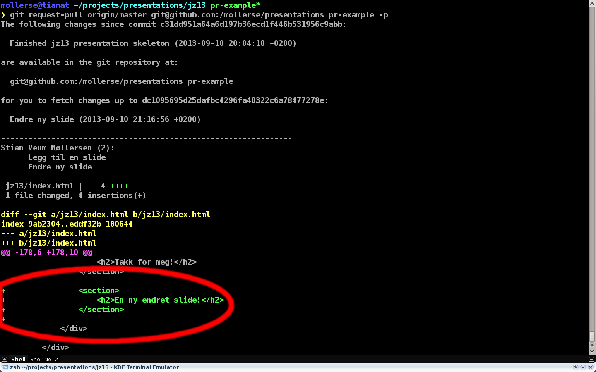
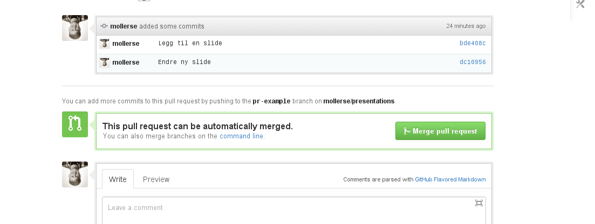
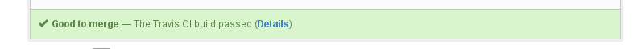

Gjør code-review til en lek
med pull-requests!
Hei, jeg heter Stian
Code Review
Hva vil du vite?
Tre ting
- Hvor finnes endringene?
- Hva er endret?
- Vil det bli noen konflikter?
Pull Requests
git request-pull

Hvor finnes endringene?
Github
user/repo
git

Hva er endret?
Commits
Github
git

Endringer
Github
git

Vil det bli noen konflikter?
Github
git
git request-pull -p > pr.patch
git checkout master
git apply --check pr.patch
Tips
Legg til .patch på slutten av urlen til en pull-request på github
Testresultater
Github
git
git checkout -b temp
git merge pr-example
run tests
Github bonus
Diskusjoner
Oppsummering
Mindre støy
Du får se akkurat det som er endret
Mye informasjon
Meta-informasjon om endringene
Begrensninger
- Må bruke branches
- Branches må være tilgjengelige
- Langt-levende branches
Fordeler
- (Delvis) workflow-uavhengig
- Må ikke bruke Github
- Kan automatiseres